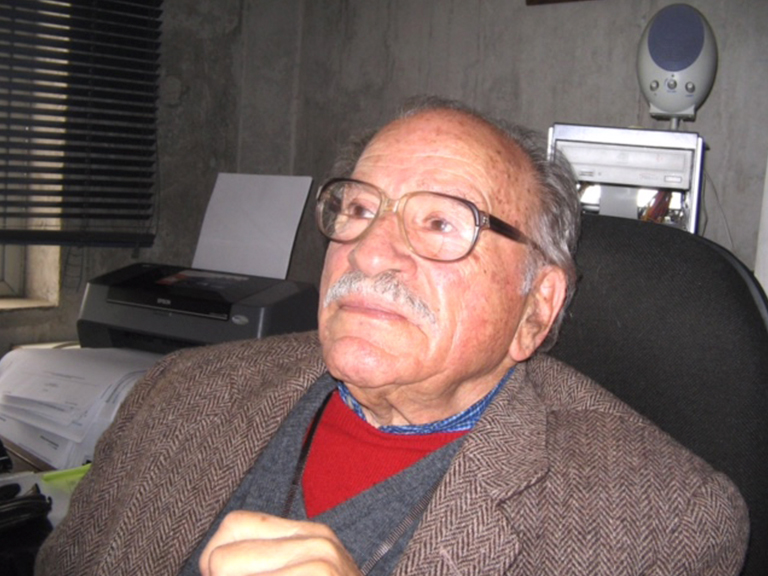

Mario Luxoro murió pocos días antes de cumplir los 90 años. Fue uno de los científicos más relevantes y trascendentes que haya tenido nuestro país. Sus contribuciones a la Ciencia y a la Academia fueron invaluables y, ampliamente reconocidas internacionalmente. Fue un ser humano extraordinario que vivió intensamente la vida. Poseía una personalidad única, de ningún modo pasaba desapercibido. Se enorgullecía de sus orígenes italianos, era a la vez entretenido, alegre, bromista, divertido y enojón, aunque muchas veces fingía serlo para divertirse. Muy afectuoso y emotivo, pasaba repentinamente de la risa a las lágrimas. Infundía una gran admiración y respeto; los estudiantes le temían, las estudiantes no tanto. Perdía su escasa paciencia ante respuestas o argumentos confusos, poco rigurosos o carentes de lógica. Poseía una amplia cultura, sabía de historia, lo fascinaban las artes plásticas y la música, en especial Vivaldi y otros músicos italianos de la época. Se mantenía bien informado del acontecer universitario y político, tenía amigos en los más variados círculos intelectuales. Sus clases eran memorables, muy entretenidas y formativas; explicaba con pasión los conceptos y entregaba los elementos esenciales de las materias, motivando a los estudiantes a estudiar para completarlas. Acostumbraba a decir que no es el profesor el que enseña sino el alumno el que aprende.
Se tituló de ingeniero químico en la Universidad Santa María, donde adquirió una sólida formación básica que marcó su carrera científica. Su interés por la investigación en las ciencias biológicas lo impulsó a ingresar a la Universidad de Chile a estudiar medicina, pero pronto sintió que para cumplir su objetivo la medicina no era el camino, razón por la cual a los dos años partió a hacer un doctorado al Massachusetts Institute of Technology (MIT), en Boston. Allí destacó como un alumno brillante, publicando el trabajo de su tesis, que él mismo concibió, como único autor (PNAS, 1958). Tuvo ofrecimientos para ejercer en los Estados Unidos, pero optó por regresar a Chile, incorporándose a la Facultad de Química y Farmacia de la Universidad de Chile, donde montó su laboratorio. Reclutó a un grupo de jóvenes entusiastas, Guayo (Eduardo) Rojas, Mitzy Canessa, Sigmund Fischer y Fernando Vargas, a quienes formó imprimiéndoles su concepción de que los fenómenos biológicos debieran, en lo posible, abordarse desde una perspectiva reduccionista. Para entenderlos había que aproximarse a ellos de una manera cuantitativa, según los principios de la física y de la química, en lugar de limitarse a describirlos, como era lo que primaba en Chile en aquella época. Con Guayo, que fue su primer discípulo, partieron entusiastamente estudiando las propiedades electrofisiológicas del axón gigante de la jibia en la Estación de Biología Marina de la Universidad de Chile ubicada en Montemar, hoy perteneciente a la Universidad de Valparaíso. Por sus enormes dimensiones, este axón ofrecía ventajas incomparables para los propósitos de su investigación. Sin embargo, debieron enfrentar dificultades de todo tipo de parte de las autoridades locales, quienes no podrían comprender las razones del intenso ritmo de trabajo de estos dos científicos. Ante esta situación, el Rector de la Universidad de Chile accedió a comprarles una casa al frente de la Estación para que pudieran habilitarla como laboratorio. Allí se instaló Luxoro con su equipo de jóvenes, dando origen a lo que fue una fantástica fuente de destacados investigadores y de una abundante producción científica. El grupo fue creciendo y sus trabajos, publicados en las mejores revistas, fueron adquiriendo rápidamente notoriedad en el exterior. Prominentes científicos de diferentes partes del planeta acudieron a Montemar atraídos por las investigaciones que allí se estaban realizando y por el atractivo que ejercían los axones gigantes de la jibia chilena, y trabajaron mano a mano con los chilenos. Los fondos y los instrumentos eran escasos, pero ellos mismos fueron construyendo algunos y, además, los visitantes generosamente les dejaban los que ellos traían para poder trabajar, lo que permitió ir aumentando el equipamiento del laboratorio. Durante el verano, que era cuando las jibias estaban disponibles, la actividad científica en el laboratorio era muy intensa. Se trabajaban largas horas con los calamares que, de manera muy artesanal, les colectaba un pescador mar adentro durante la noche. El ambiente era extraordinariamente estimulante para los jóvenes, que compartían experimentos, espacio y tiempo con prominentes científicos, siendo partícipes en sus publicaciones. De allí salieron muchos exitosos científicos, como Francisco Bezanilla, Cecilia Hidalgo, Ramón Latorre y Julio Vergara, entre otros.
Tres de los trabajos científicos de Luxoro fueron aportes fundamentales a la biofísica de membranas. Uno de ellos, en coautoría con Guayo Rojas (Nature, 1963), presentó la primera demostración de que los canales de iones consistían en proteínas. Entonces se especulaba que los iones atravesaban la membrana a través de la bicapa lipídica, lo que ellos rechazaban por los serios problemas energéticos que esa propuesta implicaba. Perfundiendo el interior de un axón con proteasa, observaron que el potencial de acción rápida e irreversiblemente se desvanecía, como era de esperarse para una proteína. En los otros dos, realizados con Silvia Rissetti (BBA, 1967) y Eugenia Yáñez (J Gen Physiol, 1068), determinó mediante mediciones de la salida de calcio radiactivo desde un axón al medio externo, que el calcio intracelular se encuentra muy mayoritariamente ligado y no libre, independientemente de la membrana plasmática, en contraste con los demás iones. El calcio era incluso retenido por el citoplasma axonal luego de ser este extraído del axón, pero podía ser liberado al exponerlo a proteasa. Posteriormente se estableció que el calcio es retenido por compartimientos intracelulares, comprobando el hallazgo pionero de Luxoro y sus colaboradoras. Interesantemente, Luxoro publicó poco más de veinte artículos, lo que no se condice con el número mucho mayor de publicaciones que los científicos establecidos actualmente suelen tener. Sin embargo, por la importancia de los trabajos mencionados, Luxoro ocupa un lugar prominente entre los grandes de la Biofísica. Mario Luxoro recibió el Premio Nacional de Ciencias en el año 2.000 por sus grandes contribuciones a la Ciencia y a la Academia.
A partir de 1968 Mario asumió por un período de cuatro años como Decano de la Facultad de Ciencias, de la cual fue uno de los fundadores. Esto le significó un enorme sacrificio, pues debió alejarse temporalmente de sus investigaciones en Montemar. Durante su decanatura la Facultad se constituyó en un poderoso centro de investigación y formación científica. Se construyeron nuevos laboratorios para permitir que un gran número de biólogos, físicos, químicos y matemáticos, se establecieran en un espacio común. Entre otras cosas, se crearon talleres especializados en trabajo mecánico y vidrio que podían cumplir de manera expedita las necesidades de los investigadores, aparte de reducir gastos de importación desde el extranjero.
El golpe militar de 1973 causó estragos tanto en la Facultad de Ciencias como en Montemar. Muchos científicos fueron perseguidos, obligándolos a huir del país. Otros, que aunque no se vieron amenazados directamente, se sintieron impedidos de seguir adelante con sus investigaciones por las pésimas condiciones económicas existentes. Las universidades fueron intervenidas, muchos profesores fueron exonerados y estudiantes expulsados o detenidos. Con gran valentía, Mario defendió a muchos de ellos ante los militares. Unos pocos científicos permanecieron en el país, a pesar de todo, dispuestos a defender la sobrevivencia de la Ciencia con la esperanza de que en un futuro distante pudiera esta renacer con nuevos bríos. Uno de ellos fue Mario Luxoro, que con enorme sacrificio personal rechazó ofertas del extranjero y continuó haciendo clases en la Facultad y experimentos en Montemar con algunos estudiantes, a quienes imprimió la tradición y el espíritu que había impuesto en ese laboratorio. Estos esfuerzos a la larga rindieron sus frutos, ya que un buen número de quienes fuimos formados por Mario durante esos duros años pudimos proseguir nuestras carreras científicas marcados por su ejemplo y sus enseñanzas.
Escribo estas líneas con la particular esperanza de que sean leídas por las nuevas generaciones y les sirvan para apreciar la estatura de uno los principales forjadores de la Ciencia en nuestro país. Y también para ilustrar cómo una persona, con talento, coraje, dedicación, creatividad y generosidad puede lograr la realización de grandes obras, superando todo tipo de dificultades.
Escrito por Dr. Juan Bacigalupo.
Archivo: publicado originalmente el 7 de enero de 2019 en el sitio anterior de la Sociedad (https://socneurociencia.cl/2019/01/07/mario-luxoro-a-dos-anos-de-su-fallecimiento/).